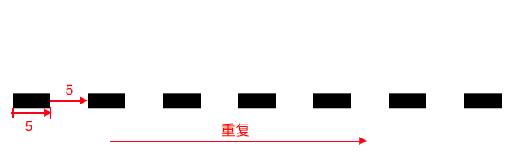

SVG 是一种开放标准的矢量图形语言，即表示可缩放矢量图形（Scalable Vector Graphics）格式，是由万维网联盟（W3C）开发并进行维护的。
由于 SVG 图像是矢量图像，可以无限缩小放大，所以 SVG 可以在任何分辨率的设备上高清显示，不需要再像以前一样输出各种 @2x 倍图来适配不同分辨率的屏幕。
更主要的是，因为 SVG 还是一种 XML 格式的图形，所以我们可以使用 CSS 和 JavaScript 与它们进行交互，同时配合如 anime.js 这类JS动画引擎，使得 SVG 在动画方面有着很大潜力和想象力。
一、SVG基本知识
先来看下面这组代码：
1 | <svg x="0px" y="0px" width="300px" height="100px" viewBox="0 0 500 100"> |
表现结果如下图所示：
在上面的代码中，我们定义了4种不同的形状：
rect 是用来定义矩形或者是正方形，其中 x和y属性，相对于 svg 元素进行定位，在这个例子中是相对 svg 左上角进行定位的；
circle 就是用来定义一个圆，cx 和 cy 定义的是圆心坐标，r 为圆的半径；
ellipse 元素来绘制椭圆形，cx 和 cy 定义椭圆圆心，rx 和 ry 定义横轴和纵轴的长度；
line 表示线段，x1，y1，x2，y2 表示起点和终点的位置；
除了每个元素特有的属性外，还有一些共有的属性，如 fill 表示填充形状的颜色，默认是黑色，stroke 表示边框的颜色， 默认是无；
二、SVG组合和路径
path 是 SVG 动画开发中最重要的一个元素。
先来看一段代码：
1 | <svg viewBox="0 0 580 400" xmlns="http://www.w3.org/2000/svg"> |
结果如下图所示：
g 标签即group 组，它可以用来集合多个 SVG 元素，比如上面的两个 path 元素。而且 g 所设置的 fill 和 stroke 可以直接应用到没有设置相关属性的子元素。
path元素有多种语法，来控制整个图形的路径与形状，具体有一下语法：
| command | 全称 | 描述 |
|---|---|---|
| M(m) x y | moveto | 移动到(x, y)（小写表示相对于上个坐标的位移，下同） |
| L(l) x y | lineto | 画一条直线到(x, y) |
| H(h) x | horizontal lineto | 水平画一条直线到x |
| V(v) y | vertical lineto | 竖直画一条直线到y |
| A(a) rx ry x-axis-rotation large-arcsweep x y | elliptical Arc | 画一段到(x, y)的椭圆弧，椭圆弧的x, y 轴半径分别为rx, ry，椭圆相对于x轴旋转x-axis-ratation度，large-arc=0表明弧线小于180度，large-arc=1表示弧线大于180度，sweep=0表示弧线逆时针旋转，sweep=1表明弧线顺时针旋转 |
| Q(q) cx cy x y | quadratic Bézier curve | 从当前点画一条到(x, y)的二次贝塞尔曲线，曲线的控制点为(cx, cy) |
| T(t) x y | smooth quadratic Bézier curveto | 此命令只能跟在一个Q命令使用，假设Q命令生成曲线s，T命令的作用是从s的终点再画一条到(x, y)的二次贝塞尔曲线，曲线的控制点为s关于s的终点的对称点，T命令生成的曲线会非常平滑 |
| C(c) cx1 cy1 cx2 cy2 x y | curveto | 从当前点画一条到(x, y)的三次贝塞尔曲线，曲线的开始控制点和终点控制点分别为(cx1, cy1)，(cx2, cy2)。 |
| S(s) cx2 cy2 x y | smooth curveto | 此命令只能跟在一个C命令使用，假设C命令生成曲线s，S命令的作用是从s的终点再画一条到(x, y)的三次贝塞尔曲线，曲线的终点控制点是(cx2, cy2)，曲线的开始控制点为s关于s的终点的对称点 |
前五个是较常用的属性，需要熟练使用；
三、SVG 文件导出与优化
对于简单的图形，可以通过代码的方式来实现，但实际开发中的大部分场景所需要的图案都难以使用代码直接绘制出来，因此可以通过一些设计工具绘制后导出 svg 格式的文件，常用的绘制软件如 AI(Adobe Illustrator)，Sketch，Inkscape等。
需要注意的是，在使用设计软件设计矢量图形的时候，往往会添加很多的控制点来设计图形。虽然最后能达到设计效果，但是在导出为 SVG 文件的时候，会产生很多冗余的节点数据。简单图形还好，如果是稍微复杂点的图形，则无疑会大大增加 SVG 文件的体积。
可以通过减少路径的控制点，采用合适大小的画布来减少体积，也可以使用一些第三方工具来进行优化：
SVGO-GUI：这是一个基于 node 的优化工具，运行软件之后，直接把 SVG 文件拖入到软件中，它会自从帮你优化好 SVG 文件。
SVGOMG：这是一个在线的优化工具，提供来非常多的选项来自定义优化 SVG 文件。
四、SVG 描边动画实战
完成如下效果图：
这个动画是由一个描边线条动画、颜色填充动画和放大动画这三个动画组成。描边线条动画可以说是 SVG 的独门武器了，现在在互联网上几乎是遍地开花，无处不在。
1. 描边动画原理
开始之前，我们先来了解下在 SVG 中描边动画原理。
上面我们介绍了在 SVG 中，很多的形状都是由 path 元素构成的，这里主要介绍下跟 SVG 描边动画密切相关的3个属性，分别为 stroke，stroke-dasharray 和 stroke-dashoffset。
stroke：是用来定义边框的颜色。
stroke-dasharray：定义 dash 和 gap 的长度。它主要是通过使用 , 来分隔实线和间隔的值。其实就是用来实现 CSS 中边框虚线的效果。和 CSS 中的 dash 的效果一样。例如：stroke-dasharray=”5, 5” 表示，按照实线为 5，间隔为 5 的排布重复下去。如下图：

- stroke-dashoffset：用来设置 dasharray 定义 dash 线条开始的位置。值可以为 number || percentage。百分数是相对于 SVG 的 viewport。通常结合 dasharray 可以实现描边动画效果。
SVG 描边的原理就是通过 stroke-dashoffset 和 stroke-dasharray 来做，分为下面两个步骤：
- 通过 dasharray 将实线部分增加至全长。比如：一条 path 的长度为300，如果把 SVG 中 path 的 stroke-dasharray 的值设置为300,300，即表示这条 path 将会按照实线为 300，间隔为 300 的排布重复下去。所以默认的情况下，我们只会看到一条300长度的实线，间隔300的线段由于已经在画布外，所以是不可见的。
- 同时，通过 stroke-dashoffset 来移动新增的实线部分，造成线段移动的效果。比如由: stroke-dashoffset:500 变为 stroke-dashoffset:0。
举个简单的例子：
首先是一条长度为300的直线：
1 | <svg x="0px" y="0px" width="300px" height="100px" viewBox="0 0 300 100" class="svg1"> |
添加动画样式，改变其 stroke-dashoffset 属性，就可以看到线条的颜色在变化：
1 | .svg1 line { |
2. 描边动画实战
回到最开始的动画，在设计好 SVG代码后，可以看到图案呈现这个样子：
1 | <svg class="checkmark" xmlns="http://www.w3.org/2000/svg" viewBox="0 0 52 52"> |
动画可以分解为以下步骤：
初始状态，各个元素都没有显示；
圆圈边框开始显示；
圆圈颜色从外向内填充；
中间勾号开始描边；
图案经过放大后，缩小回原始大小；
设置 css ，使图形展现最开始状态：
1 | .checkmark__circle { |
提示： 描边的动画实现方式，我们在上面提到的，是通过 path 的 stroke-dashoffset 属性来实现的，可以通过以下api获取对应元素的长度；
1 | var path = document.querySelector('.checkmark__circle'); |
首先是圆圈和钩的线条描边动画，只需要使用关键帧把 stroke-dashoffset 设置为0就可以了。
1 | @keyframes stroke { |
然后是填充和缩放动画，这两个动画主要是使用来 transform 和 box-shadow 这两个属性来实现的。
1 | @keyframes scale { |
完整代码，一个简单的 SVG 动画就完成了：
1 | .checkmark__circle { |
五、SMIL动画简介
所谓SMIL动画指在 SVG 集成了 Synchronized Multimedia Integration Language (SMIL) 这种动画标准，该语言被 SVG 原生支持，主要是使用标签来描述动画。
利用SMIL，可以实现以下特性：
1、变动一个元素的数字属性（x、y……）
2、改变元素的变形属性（translation或rotation）
3、改变元素的颜色属性
4、跟随路径运动
5、控制形状之间的变化
通过添加 SVG 动画元素，比如 animate 到 SVG 素内部来实现动画，就能实现让元素动起来。下面来看几个实例来演示四种不同的动画方式。
在 SVG里面定义一个矩形，并定义好颜色等属性，添加 animate 元素，在 animate 中，使用 attributeName 来定义我们需要元素发生变化的属性，在这个实例中，我们需要它左右移动，即横坐标X，就可以把用 attributeName 设置为 x。这样就可以使元素在X轴上运动，定义 from 的值和 to 的值，指定元素要运动的距离；使用 dur 来定义运动的时长；使用 repeatCount 去定义动画运行的次数，repeatCount 值为 indefinite 表示无限循环这个动画。
1 |
|
一个简单SVG SMIL动画就完成了。
我们还可以使用
1 | <svg width="500px" height="500px" viewBox="0 0 500 500"> |
在上面的代码中我们可以看到 from 的值为 0 100 100，to的值为 360 300 300，即表示元素在横坐标和纵坐标分别为100的位置旋转360度到横坐标和纵坐标分别为300的位置。
通过上面一个简单的动画效果，我们对SMIL动画也有了一个初步的认识，下面再通过一个稍微复杂点效果，来进一步加深对 SMIL 动画的认识。
开始之前先来分析下这个动画效果的构成。
- 首先是旋转动画，这个可以用 transform 中的 rotate 属性来实现。
- 然后是这个圆圈边框的颜色变化，这个可以通过改变 stroke 的颜色的值来实现。
- 最后，是边框的长短变化，这个可以通过改变 stroke 的 stoke-dashoffset 来实现。
基本HTML结构
1 | <svg width="65px" height="65px" viewBox="0 0 66 66" xmlns="http://www.w3.org/2000/svg"> |
添加 animateTransform 标签，设置attributeName 为 transform，type 为rotate，即旋转属性。
这里 values 可以是一个值或多值。多值时候有动画效果。当 values 值设置并能识别时候，from, to 的值都会被忽略。（类似 css3 动画的关键帧的意思）。 values=”0 33 33;270 33 33” 表示元素在横坐标和纵坐标分别为33的这个位置保持不动，从0到270这个角度不停的旋转，因为 repeatCount 的值为 indefinite。
圆圈旋转动画完成后，接下来是边框颜色的变化，这个圆圈在旋转的过程中，有5中颜色的变化，这个时候 values 就派上用场了： 颜色的变化我们使用 attributeName 的值指定为 stroke，然后使用 values 指定5个颜色的值，这样元素的 stroke 也就是边框的颜色会在这5中颜色来回不停的变化。
还设置了圆圈的 stroke-dasharray 和 stroke-dashoffset 两个属性的值，在后面的用来实现边框长短变化动画用的。
1 | <svg width="65px" height="65px" viewBox="0 0 66 66" xmlns="http://www.w3.org/2000/svg"> |
结语
本文介绍了 SVG 的基本知识，看到利用 SVG 的标签和 CSS3 的动画效果已经可以做出一些简单的动画，但实际情况中，可能会遇到更复杂的场景，这个时候，就可以利用类似 Anime.js 这类的js动画引擎来实现更复杂的动画控制了，将在下节继续介绍。